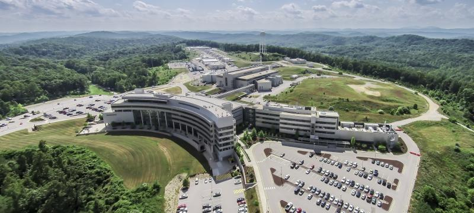
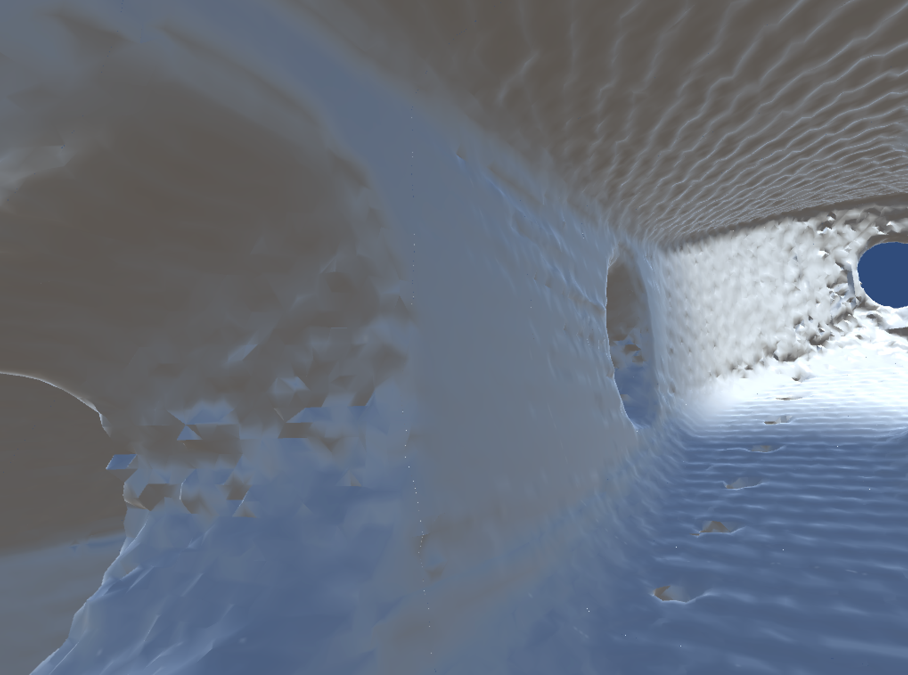
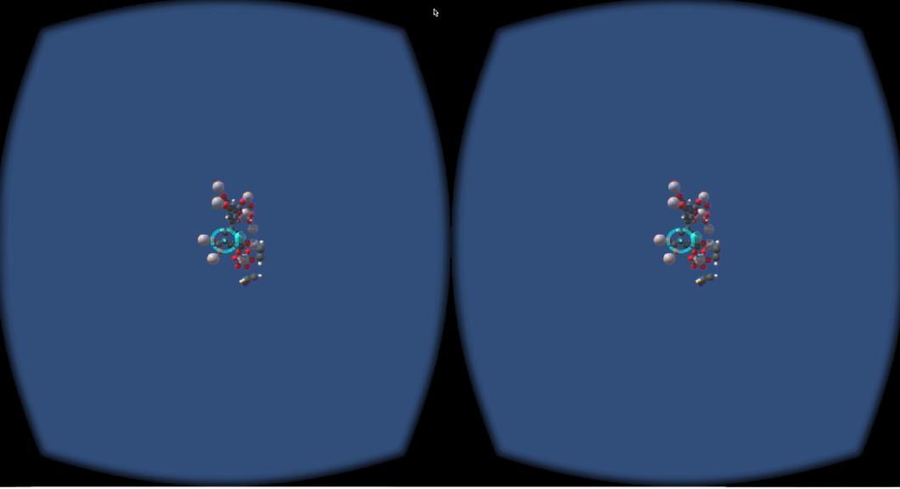
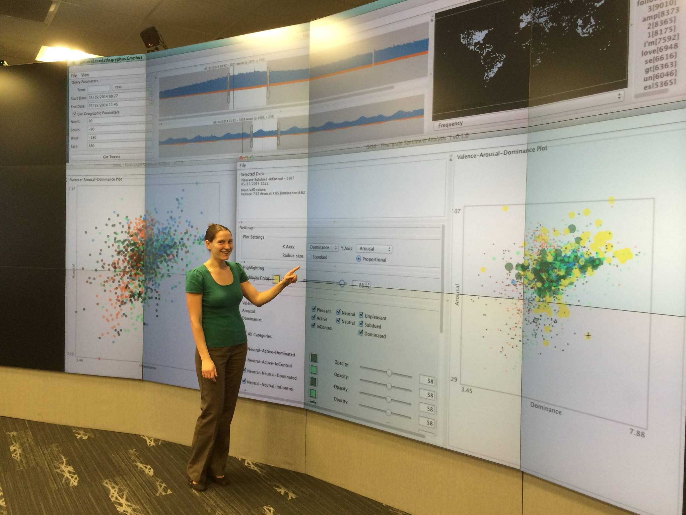
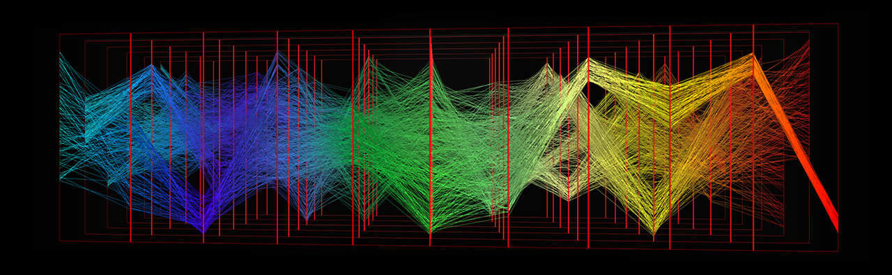
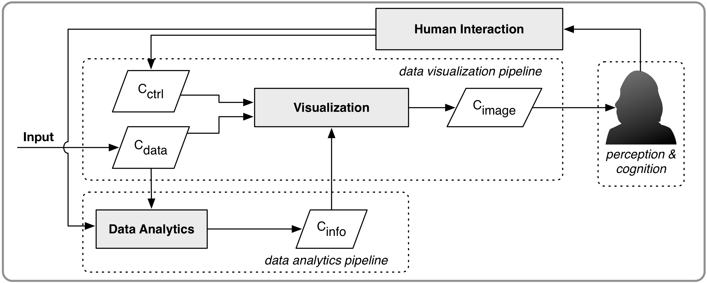

Immersive Visual Analytics for Transformative Neutron Scattering Science
Immersive Analytics Workshop @ VR2016
Chad A. Steed (ORNL) | csteed@acm.org
Jamison Daniel (ORNL), Margaret Drouhard (UW HCD&E),
Steven Hahn (ORNL), and Thomas Proffen (ORNL)
March 20, 2016
Immersive Visual Analytics for Transformative Science
Immersive Analytics Workshop @ VR2016
Chad A. Steed (ORNL) | csteed@acm.org
Jamison Daniel (ORNL), Margaret Drouhard (UW HCD&E),
Steven Hahn (ORNL), and Thomas Proffen (ORNL)
March 20, 2016
Motivation
Modern neutron scattering -> large and complex data
Scientists at user facilites (ORNL SNS) have limited time and often low proficiency with 3D visualization tools.
Most analysis is conducted after leaving the facility, which is not productive.
An Emerging Solution
An immersive visual analytics system could lower the barriers to advanced visualization and analysis and unlock the full potential of scientific analysis.
More intuitive interactions with complex data.
Timely analysis results can be used to modify experimental parameters.
Oculus Rift
Harness the intuitive nature of an immersive HMD
Developed Unity application with a Blender workflow
Gaze-based navigation and interaction

Detailed Scientific Investigations
SNS scan of a 3D-printed turbine blade using the Oculus. Navigation achieved in a fraction of the time required by a traditional 3D visualization tool.
Molecular Data Analysis
Neutron scattering scientists were eager to use the Oculus Unity application and found it easy to use.

ORNL EVEREST Visualization Lab
A 37 MP display wall with stereoscopic capabilities and room level tracking.
Collaborative visual analysis environment.
Stereoscopic Parallel Coordinates
Immersive Visual Analytics Framework
Human Interaction + Immersive Visualization + Data Analytics.
Key Components
Intuitive human interactions
High performance computing (for the largest datasets)
Smart Immersive Data Analytics
Multi-disciplinary Participatory Design
Conclusions
Scientists are eager to try new immersive techniques.
Informal feedback has been all positive.
Formal evaluations are needed, but practical evaluations are also important.
Close the loop between human interactions and data analytics.
Design systems with domain experts.